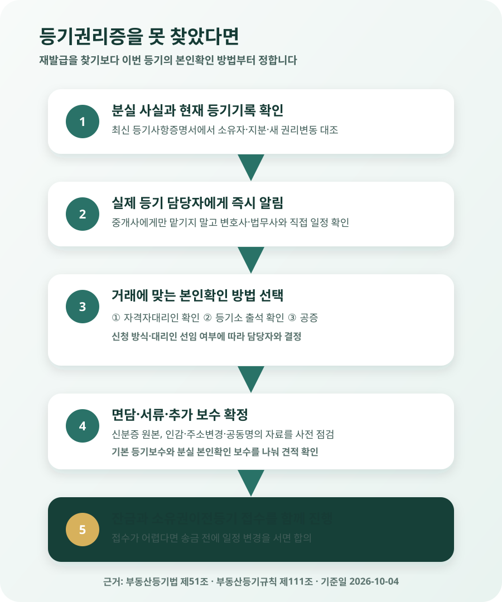

등기권리증을 잃어버렸는데 집을 팔 수 있을까?
등기권리증을 잃어버려도 집의 소유권이 사라지거나 매매가 금지되는 것은 아닙니다. 다만 같은 서류를 다시 발급받아 가져가는 방식이 아니라, 실제 소유자인지를 별도로 확인하는 절차를 거쳐야 합니다. 보통 소유권이전등기를 맡은 변호사·법무사가 매도인을 직접 확인해 확인정보를 작성하는 방법을 검토합니다. 계약서에 서명하기 전이나 늦어도 잔금일을 잡을 때 분실 사실을 알리고, 누가 어떤 방법으로 본인을 확인할지와 추가 보수·준비서류를 서면으로 받으세요.
‘집문서’가 없어져도 등기부의 소유자는 그대로입니다
예전부터 집문서라고 부르던 종이에는 ‘등기권리증’, ‘등기필증’, ‘등기필정보’라는 말이 섞여 쓰입니다. 모양과 발급 시기에 차이는 있지만, 이번 글에서는 소유권 취득 등기를 마친 뒤 권리자에게 전달된 등기 완료 관련 서류를 일상적으로 등기권리증이라고 부르겠습니다.
이 서류는 부동산 그 자체가 아닙니다. 현재 소유자와 근저당권 같은 권리관계는 등기기록에 남습니다. 종이를 분실했다고 등기부에서 이름이 지워지거나 다른 사람에게 소유권이 넘어가지 않습니다. 매도를 포기할 이유도 없습니다. 다만 소유권을 넘기는 사람은 등기신청에서 ‘등기의무자’가 되므로, 원래라면 등기필정보를 제공해야 하는 자리에 다른 본인확인 절차가 필요합니다.
등기사항증명서도 대신할 수 없습니다. 누구나 수수료를 내고 열람·발급할 수 있는 등기사항증명서는 현재 권리관계를 보여 주는 자료입니다. 매도인에게 교부된 등기필정보와 목적이 다릅니다. 인터넷등기소에서 등기부를 출력했다고 해서 분실 문제가 해결됐다고 생각하면 안 됩니다.
분실한 등기필정보는 같은 번호로 다시 받아 두는 서류가 아닙니다
많이 검색하는 표현은 ‘등기권리증 재발급’이지만, 실제 매도 절차에서는 새 권리증을 상시 보관용으로 다시 받아 두기보다 이번 등기신청에서 매도인 본인임을 확인하는 방법을 선택합니다. 그래서 분실한 날 바로 주민센터나 인터넷등기소에서 범용 대체증을 발급받는 절차로 이해하면 일정이 꼬일 수 있습니다.
부동산등기법 제51조는 등기의무자의 등기필정보가 없을 때 신청을 맡은 변호사나 법무사가 본인 또는 법정대리인임을 확인해 작성한 정보를 등기소에 제공하는 방법, 등기의무자가 등기소에 출석해 등기관의 확인을 받는 방법, 신청서 중 등기의무자 작성 부분에 관해 공증을 받은 방법을 두고 있습니다. 세 방법 중 아무 것이나 혼자 골라 서류 한 장을 미리 만들어 놓는다는 뜻은 아닙니다. 실제 신청 방식, 대리인 선임 여부와 등기소 접수 계획에 맞춰 선택해야 합니다.
부동산등기규칙 제111조는 자격자대리인이 확인한 경우의 확인 방법과 첨부정보를 더 구체적으로 정합니다. 핵심은 매도인이 신분증 사본만 이메일로 보내고 끝내는 일이 아니라, 등기신청을 맡은 자격자가 법이 정한 방식으로 본인 여부를 확인한다는 점입니다.
보통은 등기를 맡은 법무사에게 먼저 알리는 것이 빠릅니다
아파트 매매에서는 매수인 쪽에서 소유권이전등기를 맡을 법무사를 정하는 경우가 많습니다. 계약 단계에서 “매도인의 등기필정보가 분실됐다”고 중개사와 등기 담당자에게 함께 알리세요. 그 법무사가 이 등기신청을 실제로 대리하면서 본인확인을 진행할 수 있는지, 매도인이 언제 어디에 출석해야 하는지부터 확인합니다.
| 방법 | 누가 본인을 확인하나 | 언제 검토하기 좋은가 | 먼저 확인할 점 |
|---|---|---|---|
| 자격자대리인의 확인 | 해당 등기신청을 대리하는 변호사·법무사 | 대리인을 통해 소유권이전등기를 접수할 때 | 직접 만날 일정, 신분증과 추가서류, 별도 보수 |
| 등기소 출석 확인 | 등기관 | 당사자가 직접 신청하는 구조 등을 검토할 때 | 관할 등기소, 출석자와 예약·접수 방식, 준비서류 |
| 공증 | 공증인 | 법 제51조의 공증 방법을 이용할 사정이 있을 때 | 공증 대상 문구와 원본서류, 등기신청과 연결 방법 |
표의 방법을 섞어 “법무사에게 확인서면을 한 번 받아 두면 다음 거래에도 쓸 수 있다”고 이해하면 안 됩니다. 본인확인 정보는 분실한 권리증을 영구 대체하는 새 집문서가 아니라, 구체적인 등기신청에서 본인임을 확인하기 위한 절차입니다. 이번 매도를 취소하고 나중에 다시 담보권 설정이나 다른 처분등기를 한다면 그때의 신청 구조에 맞춰 다시 확인해야 할 수 있습니다.

계약 뒤에 알았어도 숨기지 말고 잔금 일정부터 다시 확인하세요
매매계약서를 쓴 뒤 서류함을 찾아보다가 등기권리증이 없다는 사실을 알 수 있습니다. 분실만으로 이미 체결한 매매계약이 자동으로 무효가 되지는 않습니다. 문제는 잔금일에 매도인이 소유권이전등기에 필요한 절차를 갖추지 못하면, 매수인이 잔금을 보내고도 등기 접수가 늦어질 수 있다는 점입니다.
예를 들어 잔금일이 10월 20일인데 10월 17일에 분실을 알았다고 가정하겠습니다. 매도인은 곧바로 중개사에게만 말하고 기다릴 것이 아니라, 매수인과 소유권이전등기를 맡은 법무사의 연락처를 받아 직접 절차를 확인해야 합니다. 법무사가 매도인을 직접 만날 날짜, 필요한 신분증과 인감 관련 서류, 추가 보수, 잔금일에 등기 접수가 가능한지를 확인합니다.
10월 20일 접수가 어렵다는 답을 받았다면 “어떻게든 되겠지”라고 잔금을 먼저 받기보다 당사자와 일정을 조정하고 기록을 남깁니다. 잔금 지급과 소유권이전등기 서류 교부는 함께 이행하는 것이 거래의 기본 구조입니다. 일정 변경, 지연 책임, 열쇠 인도와 관리비 정산까지 바뀔 수 있으므로 구두로 날짜만 미루지 말고 합의 내용을 문자나 별도 합의서로 남기세요.
분실 사실을 안 매도인이 잔금일에 직접 나오지 못한다면 준비는 더 일찍 시작해야 합니다. 가족이 대신 계약했거나 해외·병원에 있어 대리인이 움직이는 경우에는 권리증이 없는 본인확인과 대리권 확인이 동시에 필요합니다. 일반 위임장 한 장이면 충분하다고 단정하지 말고, 소유자 본인을 언제 어떤 방식으로 확인할지와 위임장·인감증명 등 필요한 원본을 등기 담당자에게 구체적으로 안내받으세요. 계약 상대방도 중개사의 “가족이 맞다”는 설명만 듣지 말고 소유자의 처분 의사를 확인해야 합니다.
신분증만 들고 가면 된다고 단정하지 마세요
필요서류는 본인확인 방법과 소유 형태에 따라 달라집니다. 단독소유인지 공동명의인지, 매도인이 직접 출석하는지, 주소나 이름이 등기기록과 달라졌는지, 근저당권을 동시에 말소하는지에 따라 준비물이 늘어납니다. 공동명의라면 권리증이 없는 사람뿐 아니라 소유자 전원의 의사와 서류를 따로 확인해야 합니다.
- 사진이 붙은 유효한 신분증 — 사용할 수 있는 종류와 원본 지참 여부를 담당자에게 확인합니다.
- 등기기록과 주소·성명 연결 자료 — 전입이나 개명 이력이 있다면 주민등록초본 등 필요한 범위를 안내받습니다.
- 매도용 인감증명서 등 이전등기 서류 — 권리증 분실과 별개로 매도에 필요한 서류의 용도·매수인 정보·발급일을 확인합니다.
- 매매계약서와 등기사항증명서 — 부동산 표시, 소유자, 지분과 신청 내용을 대조합니다.
- 대출 말소 관련 서류 — 잔금으로 기존 담보대출을 갚는다면 상환·말소 일정도 함께 맞춥니다.
확인서면 비용을 인터넷의 특정 금액으로 고정해 예산을 잡는 것도 피하세요. 법정 등기수수료나 세금과 별도로 자격자대리인의 본인확인 업무 보수가 추가될 수 있지만, 거래 난이도·방문 거리·사무소 보수기준에 따라 달라질 수 있습니다. 최소 두 항목, 즉 일반 이전등기 보수와 분실에 따른 추가 본인확인 보수를 나눠 견적받고 부가세·출장비 포함 여부를 물으세요.
| 견적에서 볼 항목 | 확인할 질문 | 피해야 할 오해 |
|---|---|---|
| 소유권이전등기 기본 보수 | 누가 부담하기로 했고 포함 업무가 무엇인가? | 매수인 견적에 매도인 추가 업무까지 자동 포함된다고 보기 |
| 등기필정보 분실 본인확인 보수 | 직접 면담·출장·서류 작성 중 무엇이 포함되나? | 인터넷에 적힌 한 금액이 전국 공통 법정가격이라고 보기 |
| 실비와 부가세 | 교통비·증명서·우편료와 부가세가 별도인가? | 총액만 듣고 추가 청구 가능성을 확인하지 않기 |
누가 등기권리증을 주웠다고 그 종이만으로 집을 팔 수는 없습니다
분실 사실을 알게 되면 “주운 사람이 집을 가져가면 어떡하나”가 먼저 걱정됩니다. 등기권리증은 중요한 서류지만, 그것만 내밀어 소유권이전등기를 마칠 수 있는 만능 증서는 아닙니다. 매도인의 신원과 의사, 인감 관련 서류, 등기원인 서류 등 신청에 필요한 정보가 함께 검토됩니다.
그렇다고 분실을 가볍게 볼 필요도 없습니다. 신분증·인감도장·인감증명서·매매계약서 같은 자료를 함께 잃어버렸거나 도난 정황이 있다면 위험이 달라집니다. 해당 신분증과 인감의 분실·변경 절차를 바로 확인하고, 최신 등기사항증명서에서 모르는 소유권이전·근저당권·가압류 등의 접수나 완료가 없는지 살펴보세요. 의심스러운 연락이나 서류가 있으면 관할 등기소와 수사기관, 법률 전문가에게 즉시 문의합니다.
매수인도 “권리증이 없다”는 말만으로 거래를 중단하거나, 반대로 확인서면을 쓴다니 아무 자료도 보지 않고 안심할 필요는 없습니다. 매도인 본인과 등기부상 소유자가 같은지, 공동소유자 전원이 참여하는지, 최신 등기부에 계약 뒤 새 권리제한이 없는지, 본인확인과 이전등기가 같은 잔금 절차 안에서 진행되는지를 확인해야 합니다.
대법원 2007다4295 판결은 과거 법 조문을 적용한 사건이지만, 등기필증이 없을 때 자격자대리인의 본인확인은 원래 등기관이 할 확인을 대신하는 업무이므로 주의를 다해 동일인인지 확인해야 한다고 설명했습니다. 확인서면이 단순 양식 작성이 아니라 거래 안전을 위한 본인확인이라는 점을 보여 줍니다.
이 경우에는 어떻게 해야 하나?
계약서를 쓰기 전에 분실 사실을 꼭 말해야 하나요?
등기권리증 분실 자체가 집의 물리적 하자나 등기부상 권리제한은 아닙니다. 그렇더라도 소유권이전등기 준비와 잔금 일정에 영향을 줄 수 있으므로 계약 전에 알리는 편이 안전합니다. “매도인은 등기필정보를 분실했으며, 잔금일까지 적법한 본인확인 절차와 이전등기 서류를 갖춘다”는 취지를 확인하고, 추가 업무를 누가 맡고 비용을 누가 낼지도 합의할 수 있습니다. 숨겼다가 잔금 직전에 일정이 밀리면 단순한 서류 문제가 계약 이행 분쟁으로 커질 수 있습니다.
아파트가 여러 채인데 어느 집의 권리증인지 모르겠습니다
표지 색이나 봉투만 보고 짐작하지 마세요. 등기필정보 통지서나 옛 등기필증에 적힌 부동산 표시, 등기원인과 접수정보를 실제 매도할 부동산의 등기기록과 대조해야 합니다. 한 봉투에 토지와 건물 관련 서류가 함께 있거나, 공동명의자별 서류가 나뉘어 있을 수도 있습니다. 일부만 찾았다고 바로 “권리증 보유”로 결론 내리지 말고 담당 법무사에게 원본 전체를 보여 주고 이번 신청에 필요한 정보가 갖춰졌는지 확인받으세요.
잔금 뒤에 잃어버린 권리증을 찾으면 새 주인이 위험한가요?
소유권이전등기가 적법하게 완료되면 과거 매도인에게 교부됐던 서류만으로 다시 그 집을 처분할 수 있는 것은 아닙니다. 새 소유권 등기에 관한 등기필정보는 새 권리자에게 교부되는 구조입니다. 다만 찾은 서류에는 부동산과 권리에 관한 정보가 담겨 있으므로 일반 폐지처럼 버리거나 사진을 온라인에 올리지 말고, 이전등기를 맡은 법무사에게 보관·폐기 방법을 문의하세요. 새 소유자는 이전등기 완료 뒤 최신 등기사항증명서에서 자기 명의와 예상한 권리관계를 확인해야 합니다.
집을 파는 것이 아니라 담보대출을 받을 때도 같은가요?
소유자가 근저당권을 설정하는 등 등기의무자로 참여하는 신청에서도 등기필정보가 요구될 수 있습니다. 매매가 아니라고 분실 문제가 사라지는 것은 아닙니다. 대출 승인 뒤 실행일에 알리면 담보 설정이 늦어질 수 있으므로 금융회사와 지정 법무사에게 신청 초기에 알려야 합니다. 금융회사의 대출 심사서류와 등기법상 본인확인 서류는 서로 목적이 다르므로, 은행에서 신분 확인을 마쳤다는 이유만으로 등기 절차도 끝났다고 보지 마세요.
계약부터 잔금까지 이 순서로 확인하세요
- □ 서류함·은행 대출서류·이전 등기 때 받은 봉투를 다시 확인했다.
- □ 최신 등기사항증명서에서 현재 소유자와 지분, 모르는 권리변동이 없는지 확인했다.
- □ 중개사와 매수인에게 등기필정보 분실 사실을 숨기지 않고 알렸다.
- □ 실제 이전등기를 맡을 변호사·법무사와 본인확인 방법을 정했다.
- □ 매도인이 직접 만날 날짜·장소와 준비서류 원본을 안내받았다.
- □ 기본 등기 보수와 추가 본인확인 보수, 부가세·출장비를 나눠 견적받았다.
- □ 공동명의자, 주소·성명 변경, 근저당 말소에 필요한 추가서류를 확인했다.
- □ 잔금 지급, 열쇠 인도와 소유권이전등기 접수 가능 시점을 같은 일정으로 맞췄다.
- □ 일정이 바뀌면 매수인과 변경일·비용·책임을 서면으로 합의했다.
공식 자료 및 참고자료
- 국가법령정보센터 — 부동산등기법 제50조 (등기필정보의 제공)
- 국가법령정보센터 — 부동산등기법 제51조 (등기필정보가 없는 경우)
- 국가법령정보센터 — 부동산등기규칙 제111조 (자격자대리인의 확인)
- 국가법령정보센터 — 대법원 2007. 6. 14. 선고 2007다4295 판결
- 대법원 인터넷등기소 (등기사항증명서 열람·발급과 등기 안내)
정보 기준일: 2026-10-04. 이 글은 국내 부동산 소유자가 등기필정보 없이 일반 매매의 소유권이전등기를 준비하는 상황을 설명한 정보이며 개별 법률·등기 자문이 아닙니다. 상속·법인·재외국민·외국인·미성년자·대리매도, 공동명의, 신분증과 인감의 동시 분실, 전자신청, 담보권 말소가 얽히면 준비서류와 확인 방법이 달라질 수 있습니다. 계약·잔금 전에 실제 등기신청을 맡은 변호사·법무사와 관할 등기소에 확인하세요.
잔금 준비에 같이 쓸 도구
- 매매 잔금일 체크리스트서류·송금·열쇠·등기 접수 순서 확인
- 잔금일 정산 계산기잔금과 관리비·공과금 정산액 계산